Explore Mexican lucha libre culture, create your own mask, and try it on through your webcam. Discover unique designs made by the community.
-

-

Octagón
The AAA veteran built his persona around martial arts.
This version pairs a white face with an orange headband and a central eye.
Source -
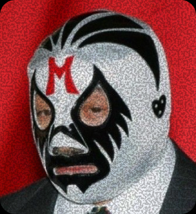
Mil Máscaras
A WWE Hall of Famer known for his many masks.
The red M sits above black feather-like shapes on silver.
Source -
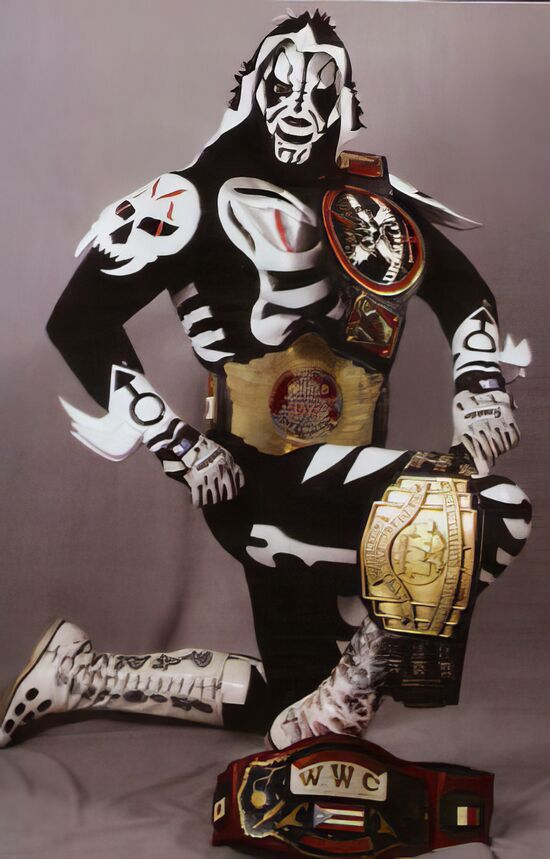
La Parka
The skeleton persona became a lucha libre and WCW icon.
Black-and-white bone shapes extend from the hood to the suit.
Source -

Blue Demon
A star of Mexican wrestling and cinema.
Silver trim connects the eyes and mouth on a royal-blue hood.
Source -
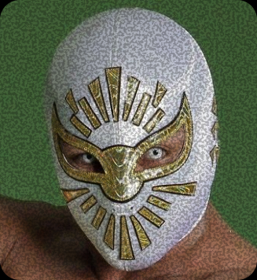
Místico
A CMLL high-flyer known for La Mística.
Gold rays fan around the eyes and chin on silver.
Source -

Penta
The luchador also wrestled as Pentagón Jr.
Fangs, a red star, and black-and-white lines give the mask a fierce look.
Source -

Possible Aero Star
The visor resembles the gear of AAA’s high-flyer.
A black visor and white grin sit inside a blue-and-gold helmet.
Source -
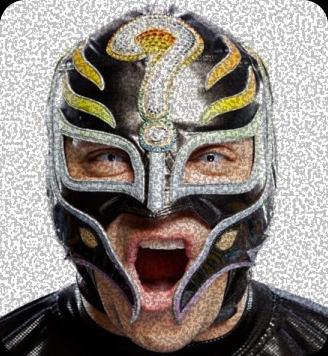
Rey Mysterio
The WWE Hall of Famer popularized the 619.
This black-and-silver design has a gold question mark.
Source -

El Grande Americano
A masked character featured in WWE and AAA.
Silver wing shapes and the ring name stand out on pale blue.
Source -

Unidentified wrestler
The wrestler in this portrait is unconfirmed.
Blue panels and gold details frame a two-eyed Aztec-style figure.
-

El Hijo del Santo
He carried on his father El Santo’s wrestling legacy.
The silver hood has teardrop eye openings and a small mouth opening.
Source -

Bravo Americano
A member of WWE’s Los Americanos trio.
A red B and dripping red trim punctuate the blue-and-gold mask.
Source -
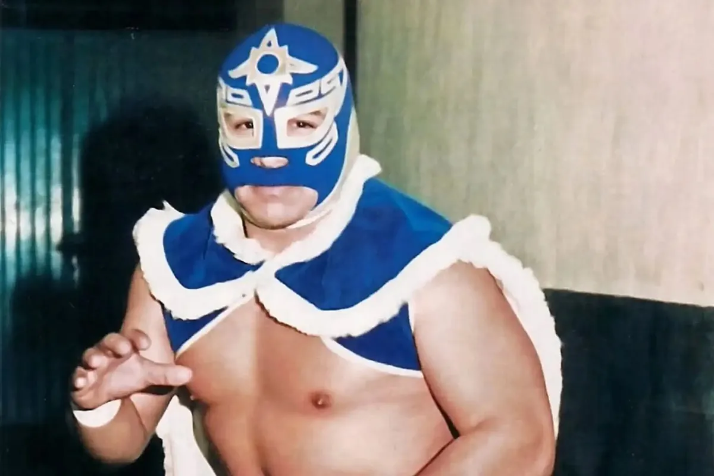
Possible Blue Blazer
The blue cape resembles Owen Hart’s masked persona.
A white four-point emblem sits above the eye openings.
Source -

Psycho Clown
The AAA wrestler is part of Psycho Circus.
The mask has a yellow mohawk, an exaggerated grin, and a long tongue.
Source -

Templario
A CMLL luchador trained by Último Guerrero.
A red cross runs across the white mesh and frames the eyes.
Source -

Axiom
The masked WWE wrestler is known for his tag team with Nathan Frazer.
Gold trim surrounds a black mesh face under a red gem.
Source -

Possible Rush
The horns resemble the gear of El Toro Blanco.
A silver bull mask pairs big curved horns with an asymmetrical eye panel.
Source -
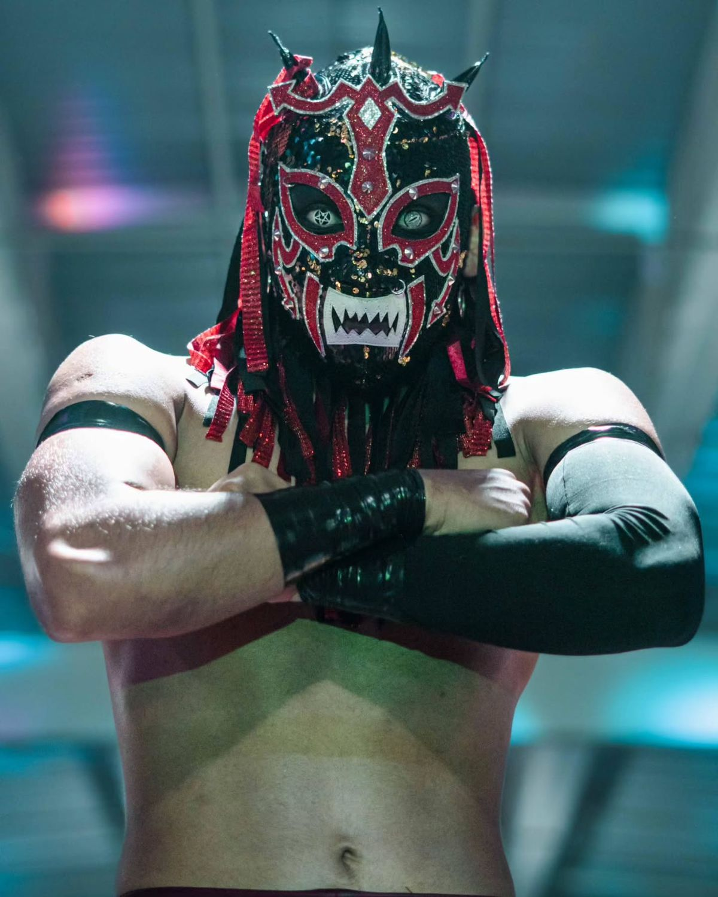
Unidentified wrestler
The wrestler in this portrait is unconfirmed.
Red braids and crown points frame a green face with white fangs.
-

Possible Último Dragón
The dragon-themed mask resembles the Japanese lucha libre veteran’s gear.
Raised blue ridges and two narrow horns shape the mask.
Source -
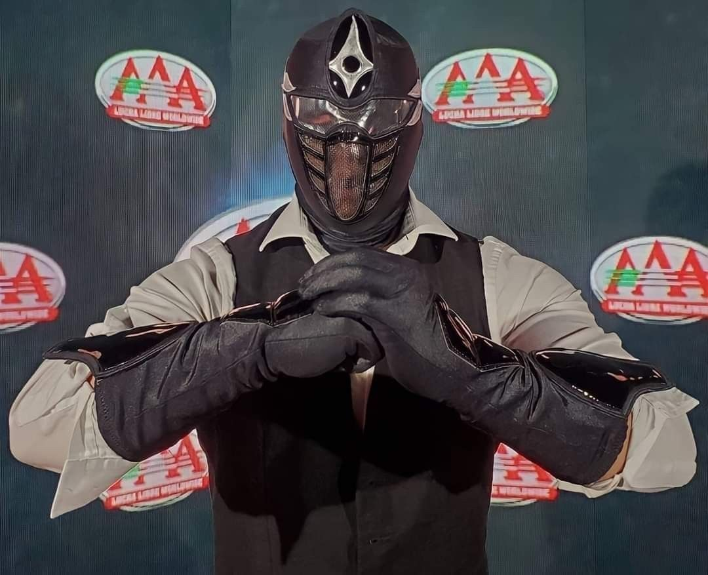
Unidentified wrestler
The wrestler in this portrait is unconfirmed.
A silver diamond, narrow visor, and mesh mouthpiece give this black mask an armored look.
-
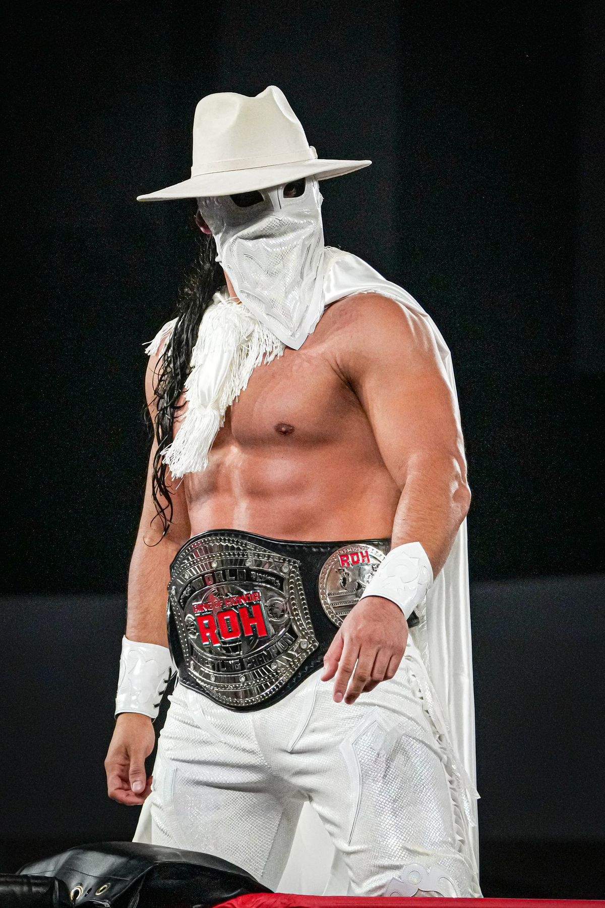
Bandido
The Mexican high-flyer has held the ROH World Championship.
A white bandana and cowboy hat give the mask an outlaw look.
Source -
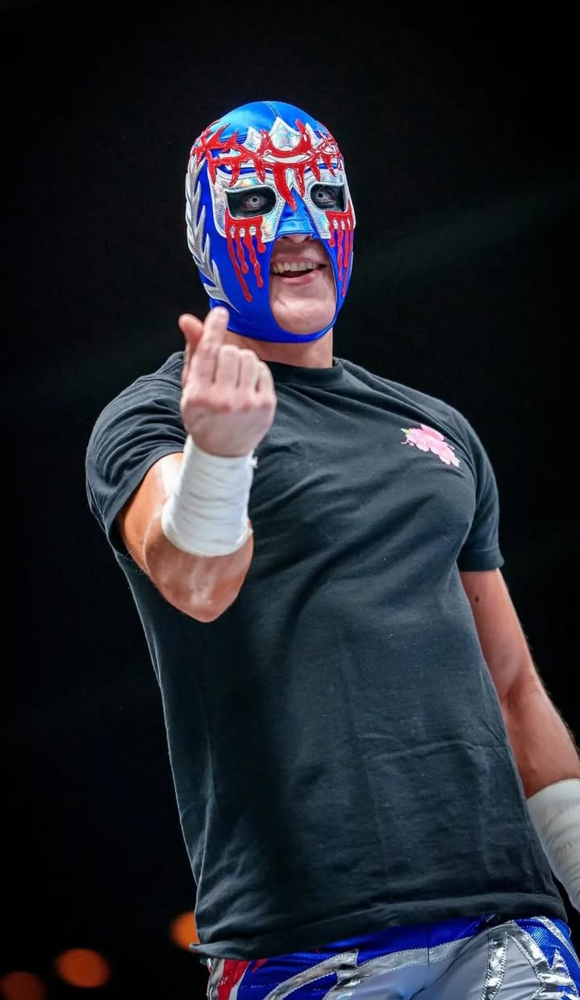
Possible Soberano Jr.
This resembles the CMLL wrestler’s blood-drip mask design.
A silver crown and red drips stand out against vivid blue.
Source -
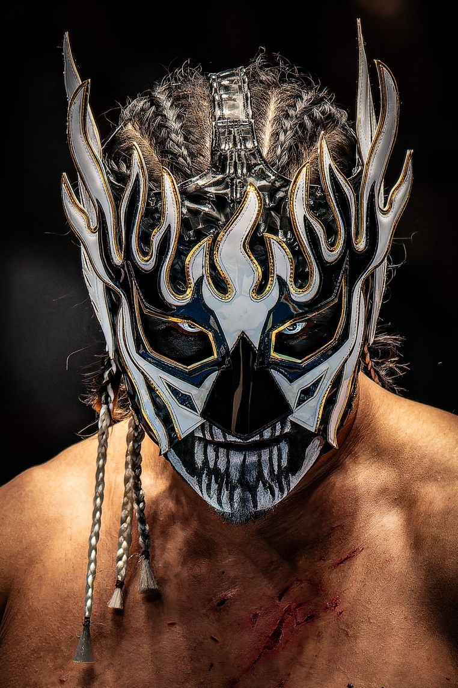
El Desperado
A New Japan Pro-Wrestling junior heavyweight.
Pale flames, gold edging, and skeletal teeth cover the black mask.
Source -
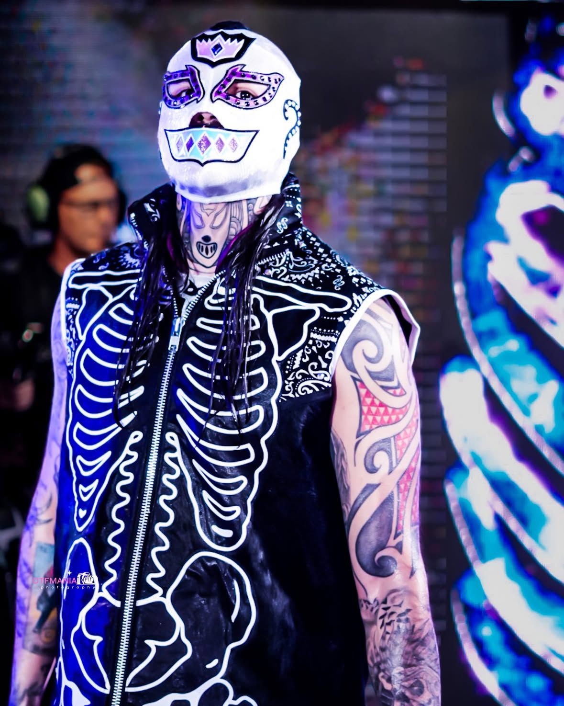
Possible Rey Fénix
The mask resembles a version worn by the Mexican high-flyer.
Purple eye trim and diamond shapes decorate the white hood.
Source -
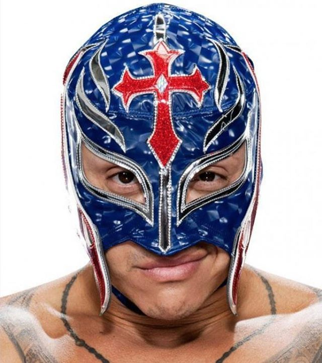
Rey Mysterio
The WWE Hall of Famer has worn many versions of his signature mask.
This navy design uses a red cross and metallic silver contours.
Source -
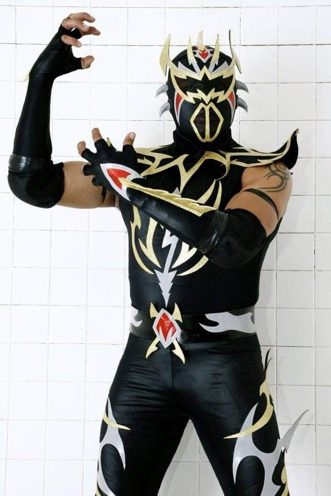
Jushin Thunder Liger
A Japanese junior heavyweight legend who also wrestled in Mexico.
Golden spikes and angular trim give this black mask a superhero look.
Source -
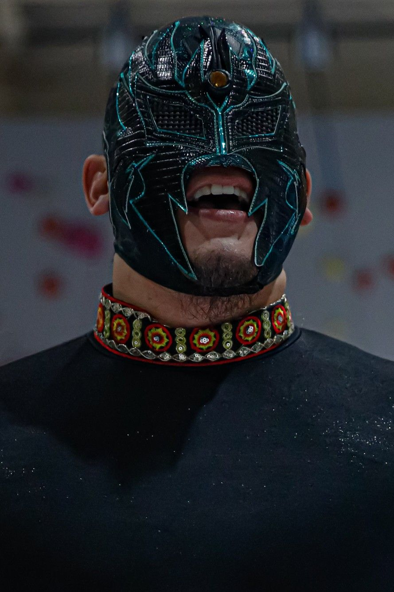
Unidentified wrestler
The wrestler in this portrait is unconfirmed.
Teal stitching and a small forehead gem contrast with the dark faceplate.
-
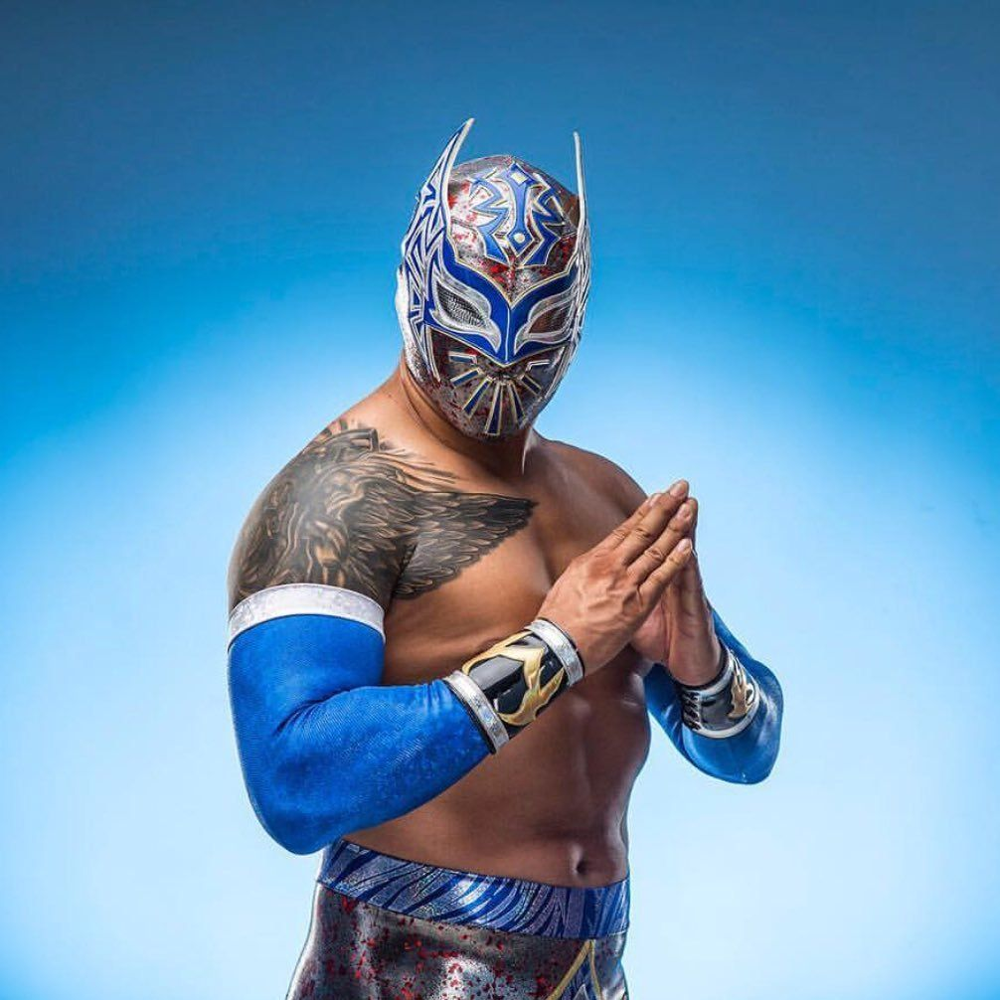
Sin Cara
A masked WWE character known for high-flying lucha libre.
The blue-and-silver hood covers the face with a fine mesh over the eyes.
Source -
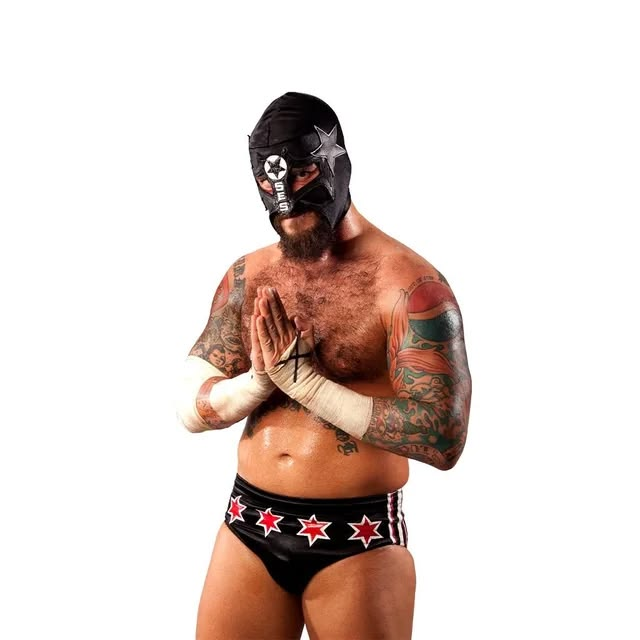
CM Punk
He wore this hood during his Straight Edge Society run after a hair match with Rey Mysterio.
Silver stars and S.E.S. initials decorate the black mask.
Source